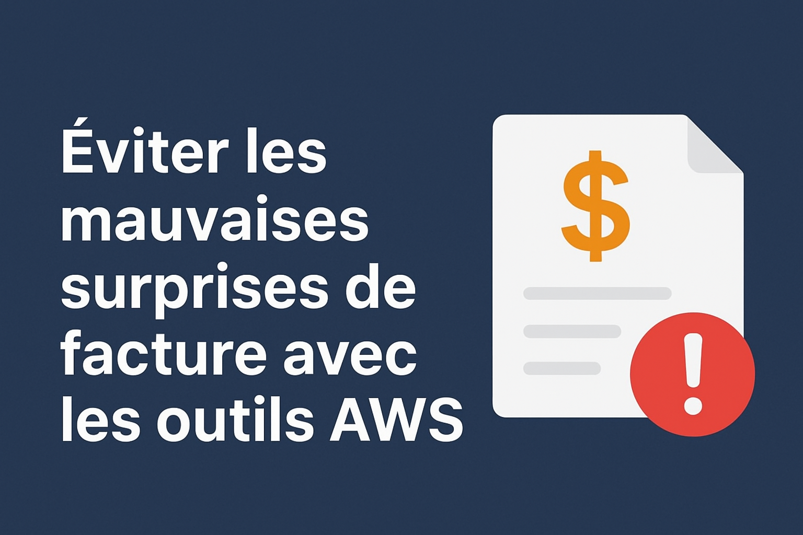
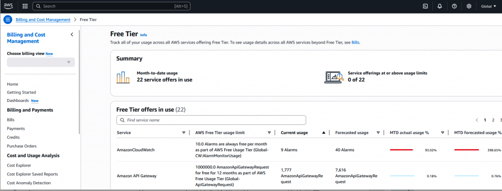
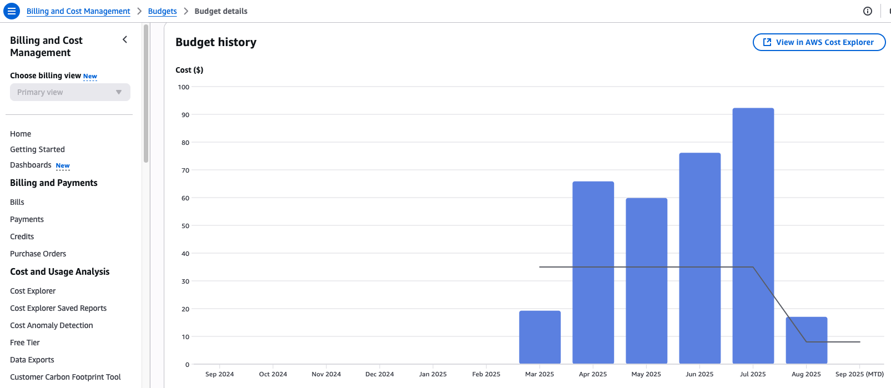
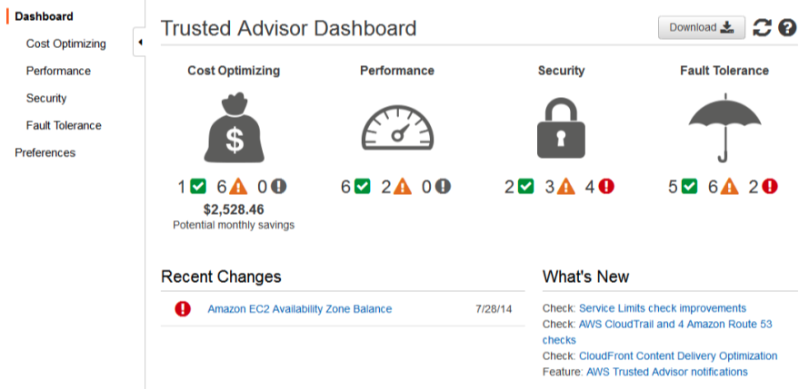
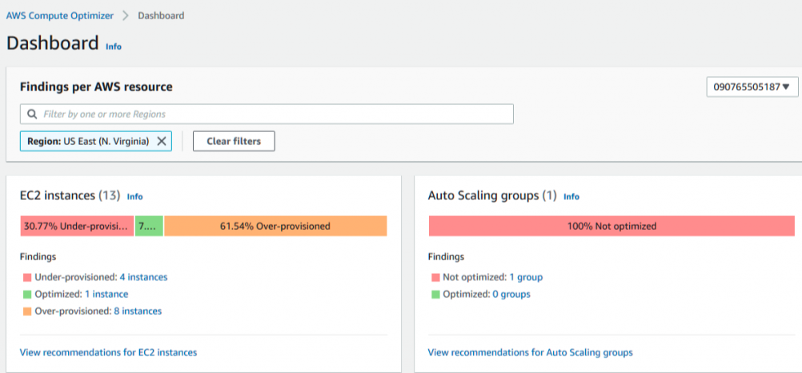
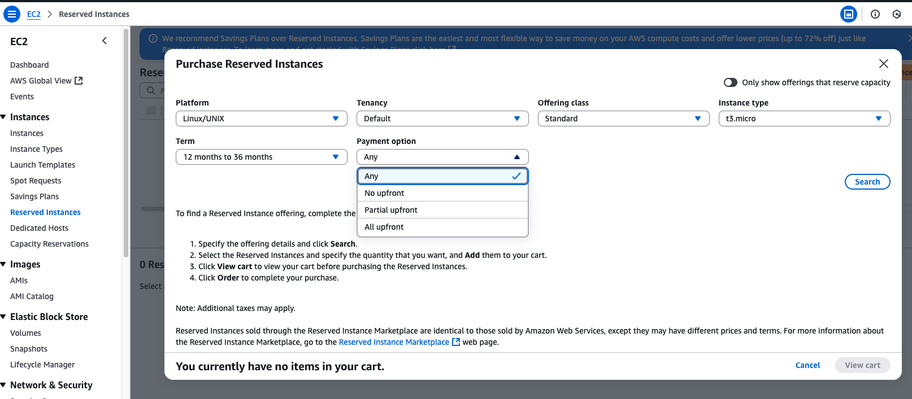

Éviter les mauvaises surprises de facture avec les outils AWS
12 Septembre 2025, 15:00 CEST
DevOpsOutils AWS pour maîtriser vos factures cloud et optimiser vos coûts
Le modèle Pay-as-you-go du cloud est comme une lame à double tranchant : la flexibilité du « payer ce que l’on consomme » est très séduisante, mais un pic de trafic, une explosion des données de monitoring ou une erreur de configuration peuvent rapidement faire grimper la facture. Aujourd’hui, nous allons présenter les outils de gestion des coûts AWS pour vous aider à éviter les mauvaises surprises à la fin du mois !

Les trois grands axes de facturation AWS
L’impact de l’utilisation des ressources sur les coûts varie selon la catégorie :
- Calcul : la part la plus élevée
- Stockage : intermédiaire
- Transfert sortant de données : relativement bon marché
Pourquoi la gestion des coûts est essentielle en cloud natif ?
Les systèmes cloud natifs (microservices, conteneurs, serverless) reposent fortement sur l’Auto Scaling et les outils de monitoring (CloudWatch, X-Ray). Ces outils améliorent la performance mais peuvent aussi augmenter les coûts.
Exemples :
- Coûts de monitoring : CloudWatch Logs facture au volume de données (ex. 0,50 $/Go). Trop de logs peuvent rapidement alourdir la facture.
- Coûts liés à l’Auto Scaling : EC2 Auto Scaling ou Lambda augmentent automatiquement le nombre d’instances en cas de pic de trafic, ce qui peut entraîner des dépenses imprévues.
- Architecture distribuée : les traces (X-Ray) et les appels inter-services (API Gateway) génèrent aussi des coûts supplémentaires.
Grâce aux outils de gestion des coûts AWS, on peut atteindre l’objectif « visualiser, contrôler, optimiser » pour aligner performance opérationnelle et maîtrise budgétaire. Même le Free Tier, censé être gratuit, peut devenir coûteux : si l’utilisation dépasse les limites prévues, la facturation commence.
Les outils AWS de gestion des coûts et leurs usages pratiques
1. Visualisation – AWS Cost Explorer
Fonctionnalités :
- Suivre les dépenses par service (Lambda, DynamoDB) ou par période (jour/mois).
- Utiliser les tags pour suivre les coûts d’un projet ou d’une équipe.
- Obtenir des prévisions pour les 12 mois à venir.
Exemples pratiques :
- Découverte que CloudWatch Logs représente 30 % du total (150 $/mois) car les logs Lambda n’ont pas de politique de rétention.
- Filtrage des coûts par Environment=Dev pour identifier des instances EC2 non arrêtées.
Cost Explorer vs CUR
Cost Explorer : visualisation rapide et analyses de base.
CUR (Cost and Usage Report) : données brutes très détaillées, adaptées aux analyses poussées et aux rapports personnalisés. Avec CUR 2.0, il est possible de sélectionner uniquement les colonnes utiles, réduisant considérablement la taille des fichiers.

2. Budgets – AWS Budgets
Définir un budget global (ex. 900 $/mois) ou par service (ex. S3 limité à 100 Go).
Recevoir des alertes par email ou SNS en cas de dépassement ou d’approche des seuils.

3. Conseiller – AWS Trusted Advisor
Détecte les ressources inutilisées (ex. Elastic IP non libérées, instances RDS peu utilisées).
Fournit des recommandations de réduction de coûts.
Version gratuite : vérifications de base. Version Business : recommandations détaillées.

4. Optimisation – AWS Compute Optimizer
Analyse l’utilisation CPU/mémoire des EC2, Lambda, ECS.
Recommande des tailles ou types d’instances moins coûteux.
Exemples :
- Réduction de la mémoire Lambda de 1024 Mo à 512 Mo car l’utilisation moyenne est de 20 %.
- Passage d’une tâche ECS de c5.xlarge à c6g.large, économie de 10 %.

5. Engagements longue durée – Savings Plans & Reserved Instances
Savings Plans : engagement flexible sur 1 ou 3 ans, réductions jusqu’à 72 %.
Reserved Instances : réductions spécifiques pour EC2, RDS, etc.
Exemples :
- Achat d’un Compute Savings Plan pour un cluster ECS permanent : -30 %.
- Achat d’une Reserved Instance RDS 1 an : -200 $/mois.

Tableau récapitulatif
| Outil | Usage | Exemple | Gain |
|---|---|---|---|
| AWS Cost Explorer | Suivi et analyse des coûts | Filtrer Environment=Dev et identifier des EC2 inactives | Arrêt immédiat des ressources inutiles → économies directes |
| AWS Budgets | Définir budget & alertes | Budget 900 $/mois, alerte à 80 % | Contrôle proactif, pas de surprises |
| AWS Trusted Advisor | Optimisation, sécurité, coûts | Détection Elastic IP non libérée | Petites économies cumulées sur le long terme |
| AWS Compute Optimizer | Recommandations de tailles optimisées | Lambda 1024 Mo → 512 Mo | Maintien des perfs, réduction des coûts |
| Savings Plans / Reserved Instances | Réductions long terme | 1 an Savings Plan + RDS Reserved | -20 à -30 % sur charges stables |
Conclusion
Dans un système cloud natif, chaque aspect lié aux coûts est concret et spécifique au contexte de l’entreprise. Ces outils et bonnes pratiques permettent de mieux anticiper et d’aligner besoins métier, performance et optimisation budgétaire.
Références
Partagez cet article :